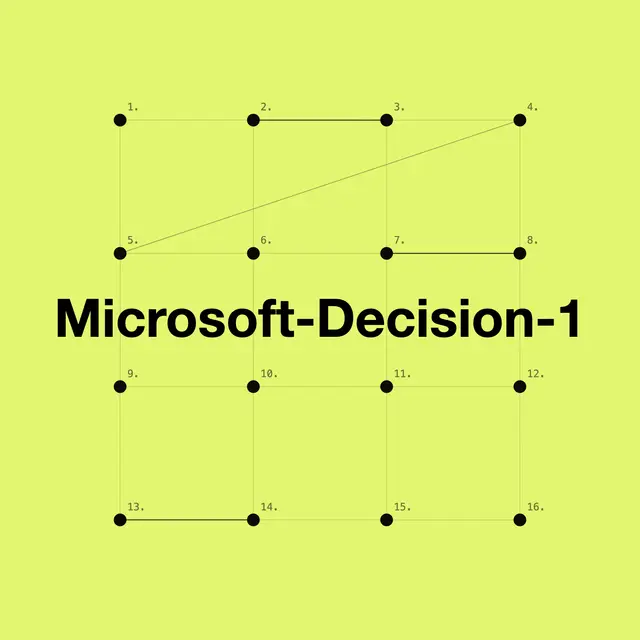

#microsoft
Microsoft、GPT-6 Solの35倍高速な意思決定AI「Microsoft-Decision-1」を発表

Microsoftは2026年10月9日、AIエージェントの判断処理に特化した新モデル「Microsoft-Decision-1」を発表しました。36種類のベンチマーク、約15万問の評価で最高精度を記録し、GPT-6 Solと比較して約35倍の高速処理を実現したとしています。
記事で取り上げている点
- 従来のLLMとは異なる「意思決定特化型AI」
- GPT-6との比較で見えた性能
- 100万トークンあたり0.042ドルの低価格
- 今後の展望
一次情報（出典） commandline.microsoft.com